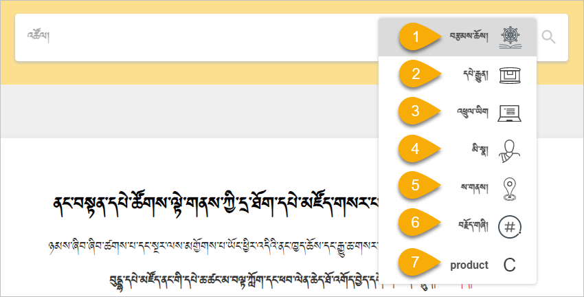

དྲ་ཚིགས་buda.zju.edu.cn ནི་ BDRC འམ་ནང་བསྟན་དཔེ་ཚོགས་ལྟེ་གནས་ཀྱིས་བཟོས་ཤིང་། ད་བར་ངེད་ཚོགས་པས་འབད་པ་གློད་མེད་ཀྱིས་འཚོལ་བསྡུ་བྱས་པའི་ནང་བསྟན་གྱི་གསུང་དཔེ་ཇི་སྙེད་ཡོད་པ་རྣམས་ཐུན་མོང་གིས་ལོངས་སུ་སྤྱོད་ཕྱིར། དྲ་ཐོག་དཔེ་མཛོད་ནང་གསོག་འཇོག་བྱས་ཏེ་གློག་ཀླད་བཀོལ་མཁན་ཚོར་ཆེད་དམིགས་ཀྱིས་དྲ་ཚིགས་འདི་བཟོ་བསྐྲུན་བྱས་པ་ཞིག་ཡིན། ཁ་པར་དང་ipad, 平板 བཀོལ་མཁན་རིགས་ལའང་རིན་འབབ་སྤྲོད་མི་དགོས་པའི་ ལག་བཅངས་དཔེ་མཛོད་ ཅེས་པའི་མཉེན་ཆས་ཤིག་ཀྱང་ཆེད་དུ་བཟོ་བསྐྲུན་བྱས་ཡོད།
དྲ་ཚིགས་འདི་ལ་འཚོལ་ཞིབ་དང་དཔེ་ཀློག་ལ་ཉེ་བར་འཁོ་བའི་ཁྱད་ཆོས་ཞིབ་ཚགས་ཤིང་སྣེ་འཛོམས་ཤིག་ཡོད། དེ་དག་རེ་རེ་བཞིན་ངོ་སྤྲོད་བྱས་ཡོད། སྡེ་ཚན་ཀྱི་ཆ་ནས་ 1. འཚོལ་བཤེར་སྒྲིག་འགོད་ཀྱི་རིམ་པ། 2. བཙལ་འབྲས་ཞིབ་བཤེར་གྱི་རིམ་པ། 3. གཞི་གྲངས་ཀྱི་རིགས་ཀྱི་རིམ་པ། 4. མཛད་པ་བོའི་དུས་རབས་ཀྱི་རིམ་པ། 5. རྩོམ་རིག་རྣམ་དབྱེ་ཡི་རིམ་པ་སོགས།
བཅས་སྡེ་ཚན་དེ་དག་གི་གོ་རིམ་ལྟར་ངོ་སྤྲོད་བྱས་ཡོད།
དྲ་ལམ་ནས་ཐད་ཀར་buda.zju.edu.cn བྲིས་ཏེ་དྲ་ཚིགས་ཚོལ། དྲ་ཚིགས་ཀྱི་སྐད་ཡིག་འདེམ། བཙལ་བྱའི་ནང་དོན་གྱི་རྣམ་པ་གང་དགོས་བཅས་བདམས་ཏེ་བཙལ་བྱ་བྲིས་ཏེ་ཚོལ།

བཙལ་བྱའི་ནང་དོན་དེ་བརྩམས་ཆོས་ཀྱི་རྣམ་པ་དགོས་པ་ལྟར་བཙལ་འབྲས་གྲངས་ལ་བལྟས་རྗེས། དེའི་སྒང་གི་ ཚགས་སྒྲིག་ བརྗེ་བསྒྱུར་བྱས་ན་ཁྱེད་ལ་དགོས་པ་དེ་སྟབས་བདེ་རུ་གཏོང་ངེས། བཙལ་འབྲས་རྣམས་ལ་མིག་བཤེར་བྱས་ཏེ་འདེམ།
རང་ཉིད་ལ་མཁོ་བའི་དཔེ་ཆ་དེར་བསྣུན་རྗེས་ཐད་ཀར་ དཔེ་རྒྱུན་ གྱི་སྡེ་ཚན་ཁ་ཕྱེ་ཡོང་། འདིར་དེ་འབྲེལ་གྱི་གནས་ཚུལ་ཞིབ་བལྟ་དང་འདེམ་གསེས་བྱས་ཏེ་དགོས་ངེས་དེར་བསྣུན་ན་བཤེར་པར་གྱི་སྡེ་ཚན་ནང་འཛུལ་འགྲོ།

འདི་ནས་ཐད་ཀར་དཔེ་ཆ་དེ་ཕབ་ལེན་དང་ཤོག་ངོས་ཆེུང་དེའི་འཕྲུལ་ཡིག་ཡོད་ན་ འཕྲུལ་ཡིག་སྟོན། ལ་རྟགས་བརྒྱབ་ན་དེའི་འཕྲུལ་ཡིག་ཀྱང་བཀོལ་སྤྱོད་བྱ་ཐུབ། མུ་མཐུདནས་ཀློག་འདོད་ཚེ་ཤོག་ངོས་དེའི་སྒང་ལ་ཐད་ཀར་སྣུན།
འདི་ནས་ཤོག་གྲངས་ཀྱི་གོ་རིམ་ལྟར་དང་ཡང་ན་གྲངས་འདེམ་གྱིས་ཀློག་སྟངས་གཉིས་ཡོད།
འདི་ནས་ཤོག་ངོས་དེ་མིག་ལམ་དང་འཚམ་པའི་ཆེུང་དང་མདོག་ཀྱང་བརྗེ་ཐུབ་ཅིང་། ཕབ་ལེན་ཡང་བྱེད་ཐུབ།